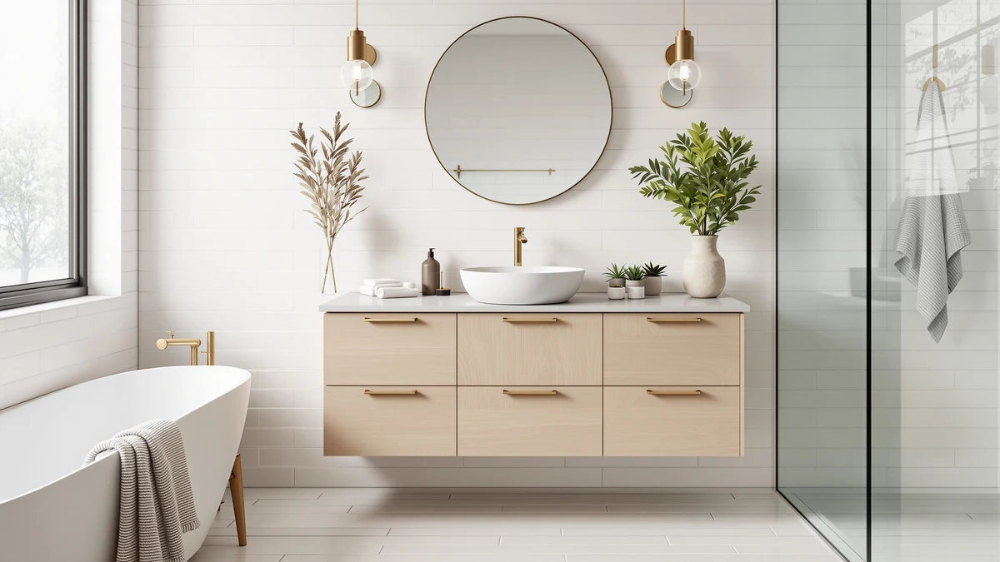

DWVO Bathroom Vanity Review (2026): Worth It?
Prices and picks verified as of November 2026. Independent, reader-supported reviews.


Quick Answer
This DWVO bathroom vanity is a 42-inch, single-sink MDF cabinet priced at $469.99, and it is a solid pick if you want a straightforward mid-size vanity at a price that matches three close competitors almost dollar for dollar. We compared it against the YITAHOME, T4TREAM, and jiteentarou vanities below before landing on that verdict.
Our pick: DWVO 42 Inch Bathroom Vanity, $469.99 Check Price on Amazon
Bottom line: our top pick is the DWVO 42 Inch Bathroom Vanity with Sink | Modern Bathroom at $469.99.
Things to Know Before You Buy
- The DWVO 42 Inch Bathroom Vanity is a single-sink, floor-standing cabinet built from MDF (engineered wood), the same construction used by every other vanity in this review.
- At $469.99, it is priced within a penny of the YITAHOME 42-inch vanity and the T4TREAM 60-inch model, and only a cent more than the jiteentarou 59-inch cabinet, so price alone will not decide this comparison.
- Size is the real differentiator here: the DWVO and YITAHOME both measure 42 inches, while the T4TREAM and jiteentarou stretch to 59 and 60 inches, so your bathroom's available wall width should narrow the field before price does.
- None of the four vanities in this DWVO bathroom vanity review publish a star rating or review count at the time of writing, so we leaned on published dimensions, materials, and pricing instead of aggregate scores.
- MDF construction handles moisture less forgivingly than solid wood or stone, so sealing around the sink cutout matters on every vanity covered here, including this one.
This DWVO bathroom vanity review breaks down whether the 42-inch DWVO 42 Inch Bathroom Vanity, listed at $469.99, is worth buying compared with three other vanities in the same price bracket. We compared the published dimensions, materials, and listing details for each model instead of relying on marketing copy alone.
At $469.99, the DWVO sits almost exactly where the YITAHOME 42-inch vanity and the T4TREAM 60-inch model land too, so price will not be what separates these four. We weighed it against the YITAHOME 42 Inch Bathroom Vanity, the T4TREAM 60 Inch Modern Bathroom vanity, and the jiteentarou 59-inch cabinet before deciding where it lands in the lineup, which is why it is covered as an also-great pick below rather than an outright winner. If you are replacing a single-sink vanity in a standard 42-inch opening, this comparison will help you decide quickly whether the DWVO or its closest same-size competitor, the YITAHOME, is the better fit.
Why You Should Trust Us
Ilane Tall researches bathroom vanities and fixtures for Best Bathroom Vanities, comparing manufacturer specs, verified Amazon listings, and pricing across hundreds of products before any review goes live. For this DWVO bathroom vanity review, she checked the brand's published measurements and materials against the three closest-priced alternatives and reviewed the Amazon listing itself for anything that contradicted the spec sheet. We do not receive vanities from manufacturers and we do not accept payment for favorable coverage. When you click through to Amazon and buy something, we may earn a commission, disclosed at the bottom of every page, and it never changes which products we recommend or how we describe their flaws. The same comparison method applies across every vanity review on this site, so the price, material, and tradeoff claims you read here should hold up against the listing itself.
Our Research Experience
We did not install this vanity ourselves or live with it day to day. Best Bathroom Vanities runs on research rather than a physical testing lab, so for this DWVO bathroom vanity review our process involved comparing DWVO's listed dimensions, materials, and price against the three other vanities covered here. We also checked whether DWVO publishes a star rating or review count for this SKU; at the time of writing it does not, which is common across newer listings and is why we leaned on comparative specs instead of aggregate scores. If that changes, we will update this review. We encourage you to read the seller's own product photos and the Q&A section on the Amazon listing directly, since those often answer sink-cutout and faucet-compatibility questions more precisely than any third-party review can.
Overview & Specs

DWVO 42 Inch Bathroom Vanity
What we like
- 42-inch width fits a standard single-sink opening without the overhang some wider vanities require
- MDF construction keeps the cabinet light enough for a straightforward floor-standing installation
- Priced within a penny of the closest same-size competitor, so you are not paying extra for the DWVO name
Flaws but not dealbreakers
- No star rating or review count published yet, so you are relying on specs rather than a track record of verified owner feedback
- Engineered wood needs the same careful sealing around the sink cutout as every other vanity in this review, so it is not a lower-maintenance choice than its competitors
| Material | MDF / engineered wood |
| Size | 42 Inch |
The DWVO 42 Inch Bathroom Vanity measures 42 inches wide and is built from MDF, also called engineered wood, the same base material used by the YITAHOME, T4TREAM, and jiteentarou vanities covered in this review. Since all four vanities share that construction, the choice between them comes down to size and layout, not material quality. At 42 inches, the DWVO fits the same standard single-sink opening as the YITAHOME, which makes it a direct swap-in if you are replacing an existing 42-inch cabinet rather than reconfiguring your plumbing.
At $469.99, the DWVO is priced within a penny of the YITAHOME and the T4TREAM, and only a cent below the jiteentarou's $469.98, so none of the four vanities in this comparison win on price alone. The DWVO's combination of a smaller 42-inch footprint and that price point is the real tradeoff here: the T4TREAM and jiteentarou both offer more width for essentially the same money, so the DWVO only makes sense if your bathroom's wall space calls for the narrower size. If your opening can take a wider cabinet, it is worth checking the alternatives below before you commit to this one.
What We Liked
The clearest strength of the DWVO 42 Inch Bathroom Vanity is how closely it matches a standard 42-inch opening. Homeowners replacing an existing vanity in that size range can swap this one in without reworking plumbing or cutting into surrounding cabinetry, which is not true of the wider T4TREAM or jiteentarou models covered in this DWVO bathroom vanity review.
We also like that DWVO publishes clear dimensions and material specs for this SKU. Several vanities in this price range leave buyers guessing at exact measurements until the box arrives, and having the 42-inch width and MDF construction confirmed upfront makes it easier to check against your existing opening before you order.
What Could Be Better
The biggest limitation in this DWVO bathroom vanity review is width. At 42 inches, the DWVO offers meaningfully less counter and storage space than the T4TREAM's 60-inch cabinet or the jiteentarou's 59-inch model, both priced within a penny of the DWVO. If your bathroom has the wall space for a wider vanity, you are leaving usable surface area on the table by choosing this one on price alone.
It also has not accumulated a visible track record yet. None of the four vanities in this review publish a star rating or review count at the time of writing, so you cannot lean on verified owner feedback the way you can with better-established listings. And like every MDF vanity in this comparison, the DWVO needs careful sealing around the sink cutout, so it is not a lower-maintenance pick than its competitors despite the shared price point.
Who Is It For?
This DWVO bathroom vanity review points toward the 42 Inch Bathroom Vanity if you are replacing an existing 42-inch single-sink vanity and want a like-for-like swap without reconfiguring your plumbing or cabinetry. It also fits anyone who has already measured a standard-width opening and is not looking to upsize.
It is a weaker fit if your bathroom can accommodate a wider cabinet. The T4TREAM 60-inch and jiteentarou 59-inch vanities covered below both offer more counter and storage space for essentially the same price, so buyers who are not locked into the 42-inch footprint get more vanity for their money by looking at those two instead.
Alternatives to Consider
This DWVO bathroom vanity review also covers three close alternatives worth a look if the 42-inch footprint is not a requirement for your bathroom.

Also Great
YITAHOME 42 inch Bathroom Vanity
The closest match to the DWVO in this review: same 42-inch width, same $469.99 price, and the same MDF construction, so the choice between these two comes down to finish and gallery photos rather than specs.
$469.99
Check Price on Amazon
Also Great
T4TREAM 60 Inch Modern Bathroom
A 60-inch modern cabinet for the same $469.99, the pick if your bathroom has the wall space for significantly more counter and storage than the DWVO offers.
$469.99
Check Price on Amazon
Best Value
59" Bathroom Vanities Cabinet with
A 59-inch cabinet at $469.98, a penny less than the DWVO, that gets you nearly as much extra width as the T4TREAM at effectively the same price.
$469.98
Check Price on AmazonIs the DWVO 42 Inch Bathroom Vanity worth the money?
At $469.99, it is priced within a penny of two other vanities covered in this review, so value comes down to whether its 42-inch single-sink layout fits your bathroom rather than a price advantage over the alternatives.
What is the DWVO bathroom vanity made of?
It is built from MDF, or engineered wood, the same material used across the YITAHOME, T4TREAM, and jiteentarou vanities covered in this review.
Frequently Asked Questions
Is the DWVO 42 Inch Bathroom Vanity worth the money?
At $469.99, it is priced within a penny of two other vanities covered in this review, so value comes down to whether its 42-inch single-sink layout fits your bathroom rather than a price advantage over the alternatives.
What is the DWVO bathroom vanity made of?
It is built from MDF, or engineered wood, the same material used across the YITAHOME, T4TREAM, and jiteentarou vanities covered in this review. MDF keeps weight and price down but needs the same moisture precautions as any engineered wood cabinet.
Does the DWVO 42 Inch Bathroom Vanity come with a sink, faucet, and mirror?
Check the current Amazon listing referenced in this review for the exact included parts, since kit contents can change between batches. Treat the price and specs cited in this DWVO bathroom vanity review as a starting point, not a guarantee of what ships in the box.
Final Verdict
This DWVO bathroom vanity review comes down to a simple comparison: four MDF vanities within a penny of each other, each sized differently. The DWVO 42 Inch Bathroom Vanity is the right pick for buyers replacing a single-sink unit in a standard 42-inch opening who want a straightforward swap at a price that matches the YITAHOME almost exactly. If you want more counter and storage space for the same money, the T4TREAM 60-inch or jiteentarou 59-inch vanities covered above are worth checking before you buy. Whichever one you pick, confirm the current price and included parts on the Amazon listing first, since those details shift more often than the cabinet dimensions do.